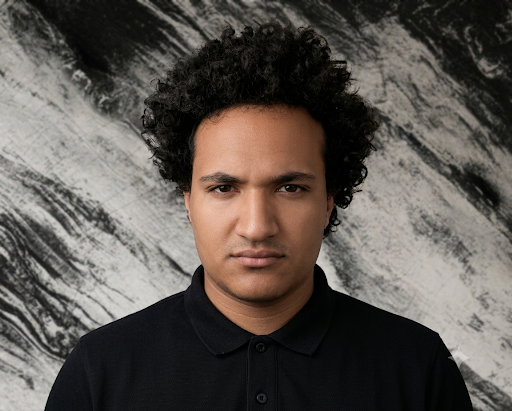

I am a dedicated Data Engineer combining enterprise-level training as a Microsoft Data Engineer Trainee (DEPI) with hands-on expertise in distributed computing and the Hadoop ecosystem. Proficient in building automated, scalable data architectures using Python, Java, SQL, and Docker, I specialize in transforming raw datasets into actionable insights through robust ETL pipeline automation and database design.
Focused on enterprise-level data engineering principles, cloud-based data warehousing, and Microsoft data stack technologies.
Completed intensive training focused on big data processing, data analytics workflows, and managing large-scale datasets.
Status: Fourth-Year Student (Level 4).
Designed an AI-driven, scalable data architecture to aggregate real-time telemetry and contextual inputs for urban traffic analysis. Engineered multi-tiered data storage strategies including hot databases, data lakes, and structured data warehouses.
Performed data preprocessing, exploratory data analysis (EDA), and trend extraction on gaming datasets to uncover marketplace insights. Utilized Python libraries to clean transactional data and generate clear visual reports.